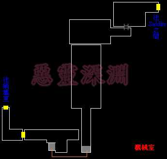
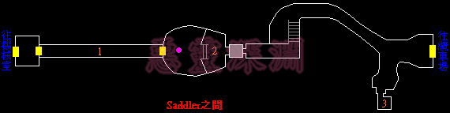
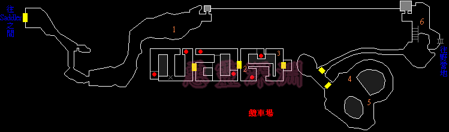
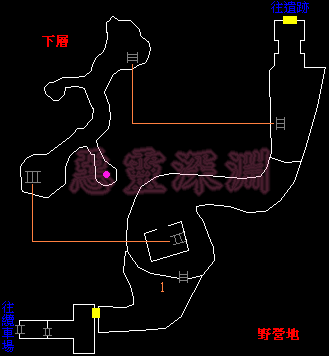
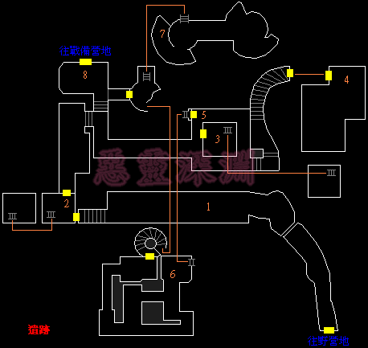

|
惡靈古堡～惡靈古堡４----地圖攻略～5-3
|
|
攻略內容以Normal為主，地圖上的紫色圓點●表示高價寶物的位置 ，標綠色的道具則是過關必須的重要道具。
Ashley被帶走，Leon又恢復單獨行動了，大廳裡有5000ptas和file 關於教團的計畫。接下來的路途沒有特別的重點，在鍋爐室會遇上 一批士兵，在編號3以及通往機械室門旁的小房間有些彈藥可以拿，往機械室。
 當玩家搭乘機械室的升降梯到達上層時，可能會感覺到機械室暗藏著一股令人窒息的平靜，的確，這裡就要發生一些事了，Leon昔 日的舊戰友Krauser出現阻擋Leon的去路，在這一段的CG之中，會出現七次的按鈕時機，請務必專心，後來Leon被踢倒在地，Krauser 在上用野戰刀往下施壓時，按鍵連壓且中途會變換按鈕，不要懈怠了。Ada出手援助，劇情結束，往Saddler之間。
 編號1的走廊上佈滿許多陷阱，一踏進去就會碰上光射線，請仔細觀察後選擇時機通過。前面兩個都是靜止的，第三個會朝Leon方 向過來，按下指示的複合按鍵即可。第四個會先出現在牆上，通過時按下指示按鈕。到走廊底部時，打開開關，此時門還未打開， 但是背後卻有光射線快速逼近，面對光射線按下指示按鈕，迴避成功後門就打開了。 （第一、二光射線快速通過法：進入走廊後，在出現光射線的動畫時按著往前跑的按鈕，直接跑過兩個陷阱，很安全。） 在編號2的地方有個椅子，除了椅子上有小寶石之外，調查椅子可以讓Leon在椅子上坐上一會，這一坐，剛好發現對面牆壁上有個 高價寶石蛍石の髮飾り（螢石的髮飾）。從椅子後方的升降梯離開。
編號3有武器商人，附近取得file Luis的Memo4，武器商人後方的鐵網門可以打開，裡面有藥草。 購物指南（new）：
如果身上的恢復藥稍嫌不足，最好在此購買急救噴霧。 待會有場Boss戰，可以先針對威力項目作改造。 往纜車場。 |
||||||||||||||||||||

|
途中有黃色藥草，到達編號1時發現了之前放在Ashley身上的追蹤器，此時因發生事件而降落到纜車上（有Ｘ記號處），U3出現攻擊 Leon，U3是無法打倒的，攻擊只能讓牠暫時撤退。由於連結每節車廂的門都鎖住了，必須要開啟那節車廂的安全裝置才能使門打開 。每節車廂安全裝置有兩個，地圖中以紅色記號代替，而車廂中有許多閘門，打開閘門的辦法是射擊門旁的綠色燈號，燈號不一定 剛好在門的旁邊，也有可能在上方或下方。當開啟該車廂的兩個安全裝置後，該車廂就會在限定時間內墜落，Leon要在限時之內離 開車廂。 到第三節車廂，當玩家打開編號2的第一個安全裝置時，U3出現並進化。另一個安全裝置的門的燈號在背面，所以必須到編號3的位 置才能射擊。離開時按下指示鈕跳到繩索上，並回到陸地。 才拿了地上的道具，往前走幾步，U3又從後面追上來，這次一定要打倒牠才能繼續，U3若使用火箭砲必須要兩發，所以玩家多利用 附近的油桶和閘門，用閘門阻隔後攻擊，閘門只能阻擋一段時間，接著可以繞著中央的石堆打帶跑。在他倒地又起身的第二段戰鬥 中，U3會開始鑽地，閘門對牠就沒用了，要隨時注意用複合按鍵躲避牠土中的攻擊，待他現身後再利用油桶或是強力武器攻擊。戰 勝後往編號6，這裡可以回到編號1，那裡有株綠色藥草。往野營地。
 野營地上佈守著一批士兵，Leon可以先站在編號1的位置，引爆下方的兩個汽油桶。由於前方的路被阻斷了，只好從下層過去。 下層有高價寶物背信の光＿青（背信之光＿藍），還有file 給Krauser的同伴的Memo，找武器商人整理裝備。 購物指南（new）：
補充恢復藥。 回到上層後往遺跡。
 到遺跡編號1附近時，Krauser開始攻擊Leon，從遠處他會發射機關槍、炸彈，近處會直接以小刀攻擊，他移動速度很快，而且彈跳力 很好，所以他不會去爬梯子。Krauser是打不倒的，給予他一定攻擊後，他會拋出閃光彈暫時撤退。Leon必須取得三個聖獸浮雕才可 以離開。 先往編號2，按下門的電子按鈕後還需等待一段時間，此時Krauser會趁機攻來， 必須要等待一定的時間門才會開，利用附近的梯子 ，爬上去後待在原地，Krauser會從下面直接跳到Leon前方，趁這個機會用小刀攻擊１次，然後快速轉身跳下，Krauser跟著跳下，再 用小刀攻擊１次，快速轉身爬上。重複數次後，就可以輕鬆打退Krauser。 也要小心需要複合按鍵的對決。等打退他後再慢慢回收道 具。由於打退Krauser也不會有任何獎品，所以玩家也可以利用跳上跳下拖延時間，門一開就逃走！ 門打開出去後Krauser就在前方埋伏，如果可以逃就逃吧。（在編號2若未打退Krauser，那Krauser就會在後面追著玩家） 到編號3房間附近時，開始出現飛行偵查機器，在遠時可以發射彈藥攻擊，近時會自爆攻擊，只要稍微攻擊，就會引爆。若要省麻 煩就不要進編號3的房間，直接往編號4。 編號4有一個聖獸浮雕（黑豹），取得後出路被堵，必須打退Krauser。這裡Krauser會在上方投擲手榴彈，或是用機關槍和刀，手榴彈 用指示按鍵就可以躲避。Krauser受到一定的攻擊，投下手榴彈撤退後，將附近的石雕像推到地上有個方塊記號的地方，接著就可以 拉開門旁的手桿，開門離開。
編號5同樣有個拉桿可以打開旁邊的門，不過小心在此會遭受Krauser的偷襲。
從梯子下降到編號6，這塊區域有很多飛行偵察機器和自爆型偵察機，慢慢前進來引爆。 經由迴旋梯和爬梯，來到編號7，這裡有聖獸浮雕（鷲），但是拿了之後就必須和Krauser進行決戰，在拿之前先去附近回收道具。 拿起浮雕，Krauser出現，利用寄生獸的力量變身，他長出的手臂是無敵的，就算再怎麼攻擊也無效；他強力的攻擊都可以用按鍵來 迴避，當Leon太靠近邊緣時，受到攻擊就要靠按鍵才能爬起。玩家若是接近出口，出口會關上。攻擊的方法，與他保持距離，當他 用手臂擋在身前往Leon過來時，攻擊他的腳部，受到一定攻擊後，Krauser就會跪在地上，雖然時間很短，卻是攻擊的好時機。由於 在戰鬥一開始就因為附近有炸彈的關係，所以有限時，打倒他時，最好還剩20秒的時間可以撤退。 戰勝後從Krauser身上取得聖獸浮雕（蛇）。上下層的門都會打開，下一層後往編號8，在牆上放上三個聖獸浮雕，在倒數時間內趕 緊離開吧。本章節結束。
疑難解答
背信の光＿青（背信之光＿藍） 3500ptas 組合──金的聖貓像 ＋ 信義之光＿紅 ＋ 審判之光＿綠 ＋ 背信之光＿藍 ＝ 金の聖猫像＋赤＋緑＋青（金的聖貓像＿紅綠藍） 35000ptas
礙物後方露出的影子，就可以先有準備了。 Krauser出現的位置其實都是固定的，但是在前個出現位置若是沒讓他使用閃光彈落跑，而讓他在後面 追的話，Krauser就不會出現在前方了，這樣說不定還比較安全呢！ 未經許可禁止轉載連結 |
||||||||||||||||||
惡靈深淵Biohazard Abyss http://98.to/coolbio